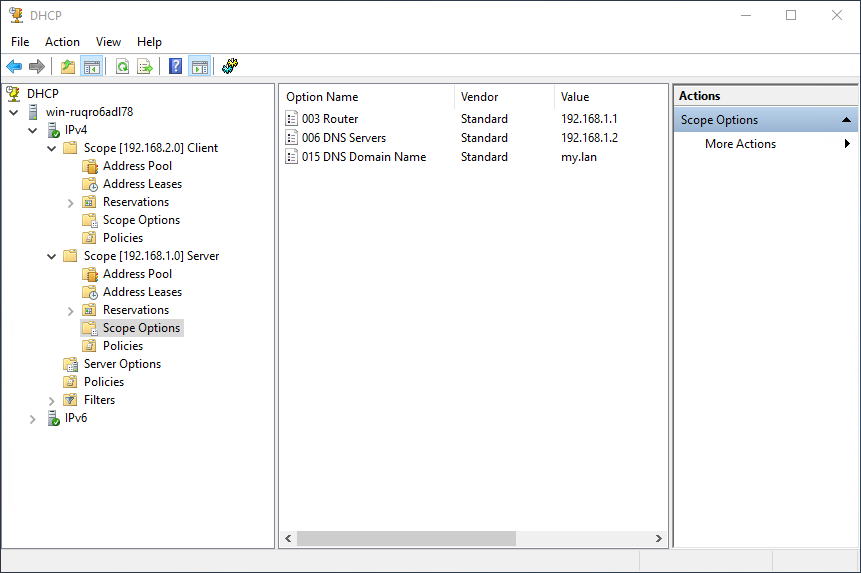
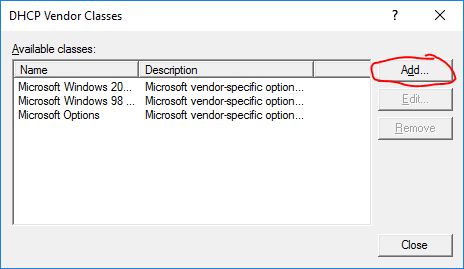
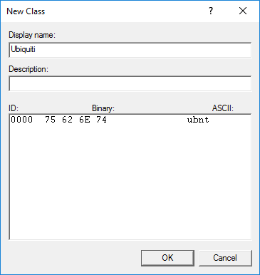
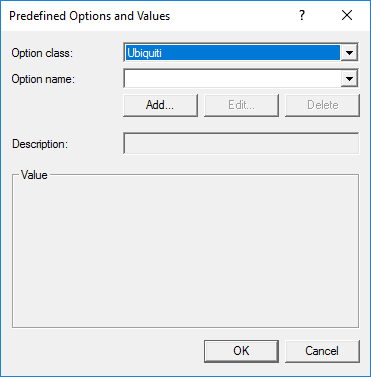
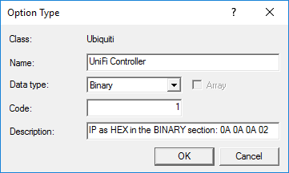
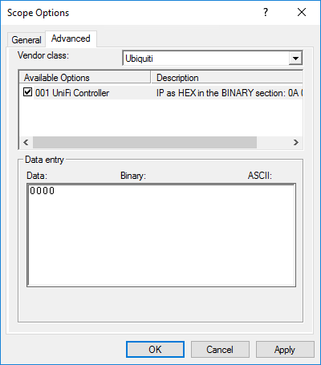
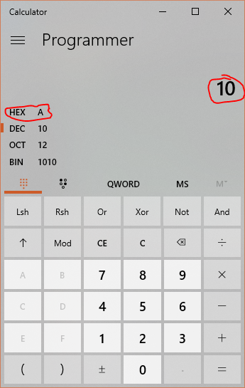

Adopting Remote UniFi Devices with Windows Server DHCP
Introduction§
UniFi Access Points (APs) and other devices are fantastic, but can be difficult to adopt from a UniFi Controller if they never show up. Many different DHCP servers can be configured to tell the devices where the Controller is. You can learn to configure several DHCP servers here but, to my knowledge, no one has yet written a tutorial on how to do this with Windows DHCP Server. This article aims to teach you just how to do that.
Cisco's document on setting up DHCP option 43 for their branded devices was invaluable to my understanding. Similarly, Ubiquiti's own document on the adoption of remote devices by a UniFi Controller provided the rest of the information I needed. Armed with these two articles I set about experimenting, and ended up successfully adopting devices on a separate network from the controller.
Prerequisites§
This article assumes these to be true:
- You have a working network with two separate subnets
- A Windows Server handles all DHCP requests for the networks
- You are not using the router's built in DHCP server
- There is a UniFi AP (or other UniFi device) on a separate subnet from the UniFi Controller
If you have not met these prerequisites, this will not likely work for you. Setting up these requirements is beyond the scope of this article, but YouTube has a ton of videos on how to set these devices up in any fashion you wish.
The Weeds§
Understanding Things§
Let's get into the nitty and the gritty. The first thing to understand is some terminology. There is a fancy text string called a Vendor Class Identifier (VCI), which some network devices transmit as part of their DHCP request, in option 60. When the DHCP server receives a request that contains an option 60, it reads the VCI and checks against its defined Vendor Classes to see if that VCI exists in its database.
Assuming the Vendor Class exists, the DHCP server will add all vendor specific scope options for the specified VCI to the generic options it's already sending. These vendor specific suboptions will be combined into a single Option 43 when sent to the requestor.
Three common options a DHCP server generally sends along with an IP address are:
| Option | Name | Vendor |
|---|---|---|
| 003 | Router | Standard |
| 006 | DNS Server | Standard |
| 015 | DNS Domain Name | Standard |
When it detects a VCI for which it has a defined class, the DHCP server will also add any scope-assigned options from that class. For instance, when an option 60 VCI of ubnt was sent with a DHCP request, a Ubiquiti class might also send:
| Option | Name | Vendor |
|---|---|---|
| 001 | UniFi Controller | Ubiquiti |
This additional option would bring the entire set of options to this:
| Option | Name | Vendor |
|---|---|---|
| 003 | Router | Standard |
| 006 | DNS Server | Standard |
| 015 | DNS Domain Name | Standard |
| 001 | UniFi Controller | Ubiquiti |
All these options, in addtion to an IP address, would be sent to the device that originally include an option 60 value of ubnt in its DHCP request. In fact, this is exactly what we're going to make the Windows DHCP server do.
Windows DHCP Server Configuration§
Open up the DHCP control panel. In Windows Server 2012 and higher, do this from Server Manager by clicking Tools, then DHCP.

Right click on the IPV4 node just below your server name, and choose Define Vendor Classes. You will be presented with this fancy screen.

Add a new vendor class by clicking the Add button. In the New Class window, enter a Display Name (I suggest Ubiquiti) and an optionally enter a description. In the ASCII portion of the lowest box type the letters ubnt. Make sure there's nothing else, to include white space, in that box. The whole line should read 0000 75 62 6E 74 ubnt as in the screenshot. Click OK, then Close to close both windows.

Right click the IPV4 node again and choose Set Predefined Options from the context menu. In the Predefined Options and Values window, choose your new Ubiquiti class from the top dropdown, and click the Add button to create a new option.

In the Option Type window, enter UniFi Controller, or some similar name, into the Name box, choose Binary in the Data type dropdown, and enter 1 in the Code box. I chose to write "IP as HEX in the BINARY section: 0a 0a 0a 02" in the Description box to remind myself how to enter the controller's IP address later. Click OK, then OK again to accept and close both windows.

We have now defined both the Ubiquiti vendor class and a predefined option in that class that we can use to point our devices at our UniFi Controller, no matter what subnet they're on.
For each subnet that contains UniFi devices, we must now add our newly created option to the Scope Options. Begin by right clicking the Scope Options node under one of your Scopes, and choosing Configure Options. Click the Advanced tab and choose Ubiquiti under Vendor Class dropdown.
There's only one option, so that's obviously the one we want. Make sure it's checked, and then erase the default value in the Binary section.

We now need to do a little math. The IP address of your UniFi Controller must be converted from decimal to hexadecimal. Windows 8.1 and later (at least) makes this extraordinarily easy with the built in calculator.
Open the windows calculator and go to Programmer mode. Ensure DEC mode is selected and type in the first octet of your UniFi Controller's IP, then see the HEX value displayed. Windows displays the value as a single digit when possible, but when entering it in hexadecimal, it must be 2 digits. Prepend a 0 to any single-digit hex values you get. For example, 10 converts to A, so you would prepend a 0 and get 0A for your hexadecimal octet.

Repeat this for each octet in your IP address, writing down each hex value.
Once you have all the hexadecimal octets, you need to enter them into the Binary section of the Data Entry box. Just type the numbers in the order of the octets. An IP of 10.10.10.2, for instance, would be entered as 0A 0A 0A 02. Click OK to close the Scope Options window.

Reboot your APs and watch them magically appear in your UniFi Controller.
Conclusion§
Getting your UniFi devices working with a controller on another network can be a bit of a challenge. All the tools needed already exist in one form or another, however, and with just a little research and guidance it shouldn't be too difficult to get yours set up. The bonus to using this method, from what I understand, is that the Ubiquiti Option 43 we created in this tutorial will not be offered unless it's requested via option 60.
References§
This is a APA formatted list of references I used to get my own server up and running properly, and to write this article.
Cisco. (2018, February 08). DHCP OPTION 43 for Lightweight Cisco Aironet Access Points Configuration Example. Retrieved March 10, 2018, from https://www.cisco.com/c/en/us/support/docs/wireless-mobility/wireless-lan-wlan/97066-dhcp-option-43-00.html
Ubiquiti. (2018, February 23). UniFi - Device Adoption Methods for Remote UniFi Controllers. Retrieved March 09, 2018, from https://help.ubnt.com/hc/en-us/articles/204909754-UniFi-Device-Adoption-Methods-for-Remote-UniFi-Controllers